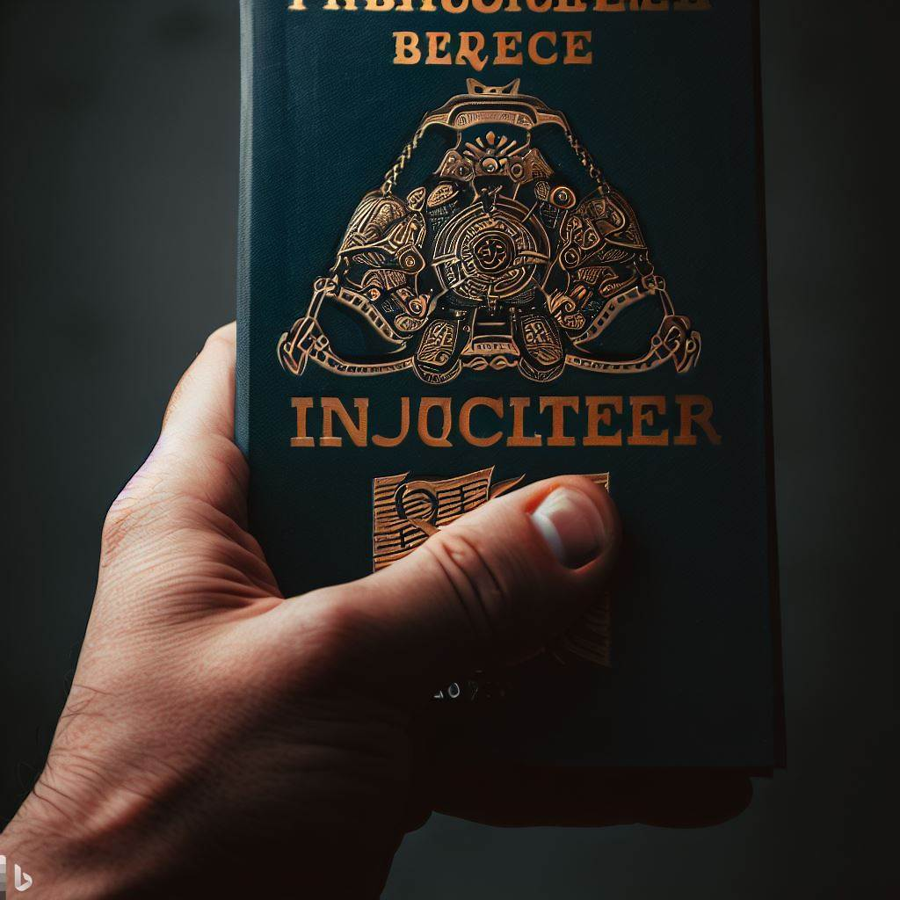
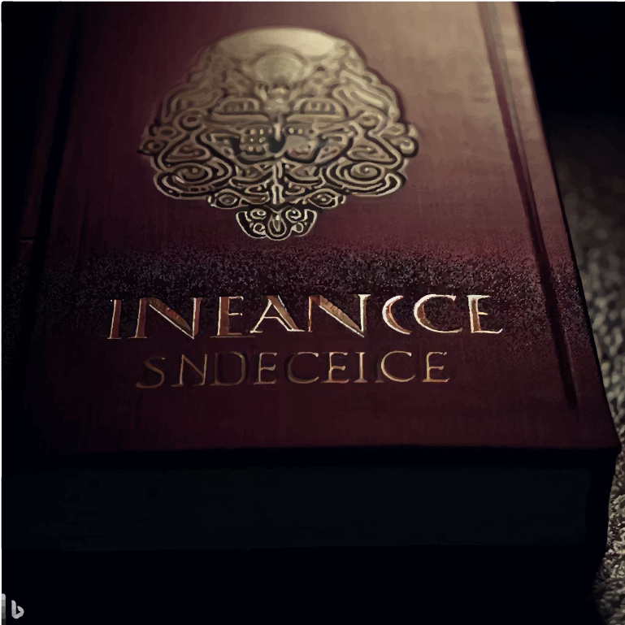
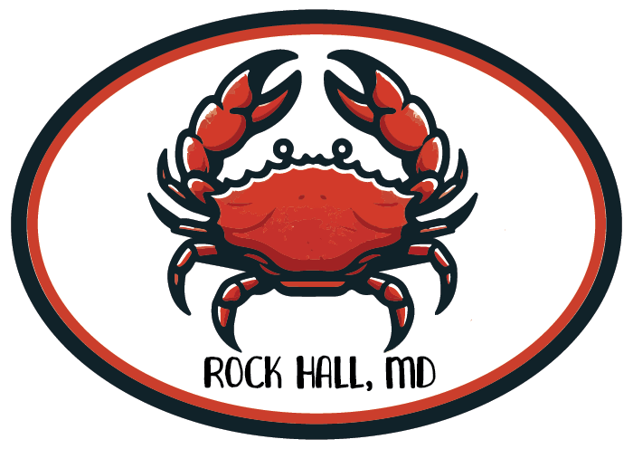

Hi! I see you've found my webpage.
Please note, I am new to programming and web design. In fact, this site is still very much in it's early stages. Feel free to take a look around, and come back later to see my progress! I have created this website to sort of bookmark my progress and showcase my abilities, as well as serve as a bit of a personal portfolio. You can think of it as a more informal type of resume. So, let's get into it!
Design
-
One of the most prominent passions in life, and most longterm hobbies, is an interest in graphic design. I love
the idea that graphics can be used to inspire feeling, and in a business sense, inspire action in subtle ways that
extend far beyond that which words can. I also adore the concept of practical and intuitive design, particularily when
it comes to customer-brand interaction. This to say, my passion for graphic design is one of my largest motivators for
learning how to program- as a means to create clean, efficient, effective web designs which look professional and
are easy to use. I am detail-oriented, and this often is a huge advantage as I delve deeper into it all. I aspire
to one day work with graphic design in industry in one capacity or another, and as I start my professional career, I
don't know that there is a better time.
As such, I do not have a long list of prestigious clients and people I have created grapics for professionally yet.
I have created most of my graphics as small elements for the various webpages I have made in practice, and am sorry
to admit that most have been disposed of as I have torn down webpages to create new ones given limited domain space.
My most notable graphic design achievement to date is redesigning the logo for Penn State University's International
Student Council after seeing an advertisement for a graphic design competition on a campus poster, included below.
The above is a concept piece for a mock-up book cover I have been constructing. It is intended to represent a book entitled "The Perpetuation of Collective Intellectualism", and is based on the images I created using AI below. The idea of the book was inspired by a friend, but its context is not especially relevent. I recognize the great potential that generative AI has, particularily in aiding design, and have spent a lot of time ensuring I am able to use it safely and effectively in helping to bring my ideas to life in a more polished, efficient manner.


And below, a sticker design representing Rock Hall, Maryland. I am originally from Lancaster, PA, but my family has a vacation property (well, a fixer-upper I had been helping to renovate since COVID) down on the Eastern Shore of Maryland- in Rock Hall. I have grown quite fond of the quaint little town over time, and made the design below to print as a sticker.
